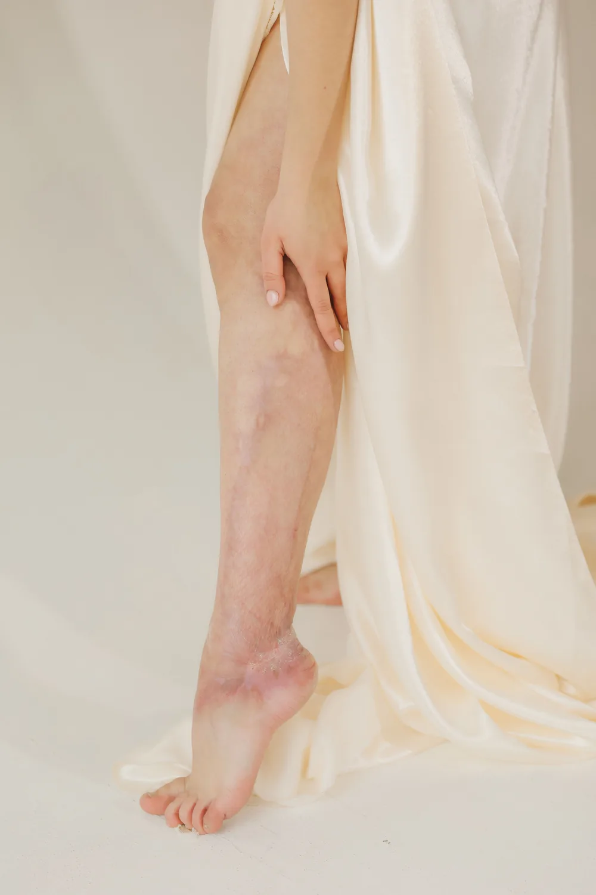

Primera cita por várices en Medellín: qué llevar y qué te van a preguntar
Ya agendaste la cita y no sabes muy bien qué llevar ni qué te van a preguntar. Es normal: buena parte del examen se hace de pie, mirando bien las piernas. Así es una primera cita en nuestro consultorio de El Poblado.

La primera cita por várices en Medellín no se siente como una consulta general. Buena parte de lo que el especialista necesita ver solo se nota con la persona de pie y las piernas descubiertas, y eso hace que muchas pacientes lleguen un poco cohibidas la primera vez. Es normal. Nadie llega acostumbrada a que le miren las piernas con esa atención.
En Seravena hacemos esta primera valoración en El Poblado, y la mayoría de pacientes llega con esa misma mezcla de curiosidad y nervios. Esto es, paso a paso, lo que puedes esperar.
Qué llevar a tu primera cita por várices
No necesitas ninguna preparación especial, pero sí ayuda llegar con algunas cosas a la mano:
- Tu documento de identidad.
- La lista de medicamentos que tomas actualmente, incluidos anticonceptivos o tratamientos hormonales.
- Tus medias de compresión, si ya usas unas, aunque sea de vez en cuando.
- Cualquier ecografía o examen vascular previo, si lo tienes.
- Ropa cómoda que te permita mostrar las piernas completas, del pie al muslo.
No hace falta estar en ayunas ni suspender ningún medicamento antes de venir.
Qué te preguntan en la consulta de várices
La primera parte de la cita es conversada. El profesional quiere entender tu historia antes de mirarte las piernas, así que es normal que te pregunte por:
- Pesadez, hinchazón, calambres o dolor, y en qué momento del día se sienten peor.
- Cuánto tiempo pasas de pie o sentada por tu trabajo.
- Antecedentes familiares de várices o trombosis: si tu mamá o tu abuela las tuvieron, cuéntalo.
- Embarazos previos, porque cambian la circulación de las piernas de forma duradera.
- Si ya usaste medias de compresión antes y cómo te fue con ellas.
- Si tú misma tuviste antes algún episodio de trombosis venosa.
No hay pregunta de más ni detalle demasiado pequeño. Un cambio en el color de la piel del tobillo, o una molestia que solo notas después de una jornada larga de pie, puede ser justo la pista que el especialista necesita.
El examen: inspección, palpación y, muchas veces, eco doppler el mismo día
Después de la conversación viene el examen físico, y ahí la cita por várices se diferencia de otras consultas: te van a pedir que te pongas de pie. Esa postura hace más evidente cómo se comporta la sangre en tus venas superficiales. El profesional observa el trayecto de las venas, el color de la piel y si hay hinchazón, y palpa la zona para revisar si hay tensión o dolor.
Con eso ya tiene una primera impresión, pero la prueba de referencia para confirmar qué está pasando es el eco doppler venoso: una ecografía que muestra si las válvulas de las venas cierran bien o dejan que la sangre se devuelva. No es un examen que se le haga a todo el mundo por rutina: se hace cuando el especialista lo considera necesario después de verte de pie. Como lo hacemos en el mismo consultorio, en muchos casos se puede hacer en la misma cita, sin ir a otro lugar ni volver otro día.
Cómo agendar tu primera cita por várices en Medellín
En Seravena atendemos solo pacientes particulares: no trabajamos con EPS ni con medicina prepagada. Eso significa que no necesitas remisión ni autorización de nadie. Agendas directo por WhatsApp y la cita suele quedar para los próximos días.
Si por tu EPS la cita con el especialista se demora, una valoración particular es una alternativa a considerar, aunque la decisión es tuya. Lo que sí te podemos asegurar es cómo funciona nuestra agenda: sin filas de espera largas. Sin trámites previos.
La primera cita no busca apurarte hacia un tratamiento. Busca entender con claridad qué está pasando en tus venas antes de hablar contigo sobre las opciones.
Cuánto dura la cita y qué pasa después
Cuenta entre 45 minutos y una hora, sumando la conversación, el examen de pie y el eco doppler si se hace ese mismo día. Al final, el especialista te explica qué encontró, en términos que puedas entender, sin apurarte a decidir nada ahí mismo.
Según lo que muestre la valoración, las opciones van desde cambios de hábito y medias de compresión hasta procedimientos sin cirugía. Si quieres entender mejor cómo se llega a ese diagnóstico, puedes leer cómo prepararte para tu primera valoración vascular, o revisar qué tener en cuenta al elegir especialista vascular si todavía estás decidiendo dónde consultar.
Si ya tienes la cita agendada, lo único que necesitas resolver hoy es la ropa con la que vas a llegar: algo que te permita mostrar las piernas sin complicarte. El resto lo resolvemos en el consultorio.
Puedes conocer más sobre el tratamiento de várices en Medellín que ofrecemos en Seravena, o resolver dudas puntuales antes de tu cita escribiendo a nuestro equipo.
Preguntas frecuentes
¿Necesito remisión de mi EPS para la primera cita por várices en Seravena?
No. En Seravena atendemos solo pacientes particulares, así que no necesitas remisión ni autorización de tu EPS: agendas directamente por WhatsApp.
¿El eco doppler se hace en la misma primera cita?
En muchos casos sí. El eco doppler venoso se realiza en el mismo consultorio de El Poblado, así que si el especialista lo considera necesario, puede hacerse el mismo día sin tener que ir a otro lugar.
¿Qué debo llevar a mi primera cita por várices?
Tu documento de identidad, la lista de medicamentos que tomas, tus medias de compresión si ya usas unas y ropa cómoda que te permita mostrar las piernas completas. No necesitas estar en ayunas.
¿Cuánto dura la primera cita por várices?
En general entre 45 minutos y una hora, contando la conversación sobre tus síntomas, el examen físico de pie y el eco doppler venoso si se hace ese mismo día.